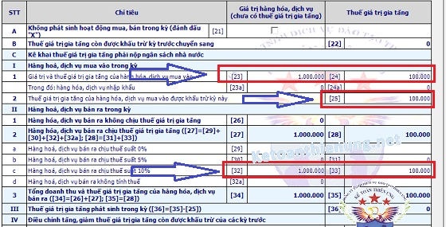
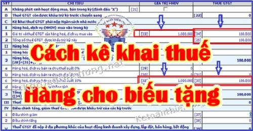

Hướng dẫn cách kê khai thuế hàng cho biếu tặng, kê khai hóa đơn hàng biếu tặng; Cách kê khai thuế hàng tiêu dùng nội bộ; Kê khai hàng trao đổi, trả thay lương cho người lao động.
I. Quy định về hàng cho biếu tặng:
1, Quy định về xuất hóa đơn hàng cho biếu tặng:
Căn cứ theo Khoản 1 Điều 4 Nghị định 123/2020/NĐ-CP:
1. Khi bán hàng hóa, cung cấp dịch vụ, người bán phải lập hóa đơn để giao cho người mua (bao gồm cả các trường hợp hàng hóa, dịch vụ dùng để khuyến mại, quảng cáo, hàng mẫu; hàng hóa, dịch vụ dùng để cho, biếu, tặng, trao đổi, trả thay lương cho người lao động và tiêu dùng nội bộ (trừ hàng hóa luân chuyển nội bộ để tiếp tục quá trình sản xuất); xuất hàng hóa dưới các hình thức cho vay, cho mượn hoặc hoàn trả hàng hóa) và phải ghi đầy đủ nội dung theo quy định tại Điều 10 Nghị định này, trường hợp sử dụng hóa đơn điện tử thì phải theo định dạng chuẩn dữ liệu của cơ quan thuế theo quy định tại Điều 12 Nghị định này."
Theo khoản 9 điều 3 Thông tư 26/2015/TT-BTC quy định:
"2.4. Sử dụng hoá đơn, chứng từ đối với hàng hoá, dịch vụ khuyến mại, quảng cáo, hàng mẫu, cho, biếu, tặng đối với tổ chức kê khai, nộp thuế GTGT theo phương pháp khấu trừ:
Đối với hàng hoá, dịch vụ dùng để cho, biếu, tặng, trao đổi, trả thay lương cho người lao động thì phải lập hoá đơn GTGT (hoặc hoá đơn bán hàng), trên hoá đơn ghi đầy đủ các chỉ tiêu và tính thuế GTGT như hoá đơn xuất bán hàng hoá, dịch vụ cho khách hàng.”
Như vậy:
- Khi xuất hàng hóa, dịch vụ dùng để cho biếu tặng thì phải xuất hóa đơn và trên hóa đơn phải ghi đầy đủ các chỉ tiêu và tính thuế GTGT => Như bán hàng bình thường.
"2.4. Sử dụng hoá đơn, chứng từ đối với hàng hoá, dịch vụ khuyến mại, quảng cáo, hàng mẫu, cho, biếu, tặng đối với tổ chức kê khai, nộp thuế GTGT theo phương pháp khấu trừ:
Đối với hàng hoá, dịch vụ dùng để cho, biếu, tặng, trao đổi, trả thay lương cho người lao động thì phải lập hoá đơn GTGT (hoặc hoá đơn bán hàng), trên hoá đơn ghi đầy đủ các chỉ tiêu và tính thuế GTGT như hoá đơn xuất bán hàng hoá, dịch vụ cho khách hàng.”
Như vậy:
- Khi xuất hàng hóa, dịch vụ dùng để cho biếu tặng thì phải xuất hóa đơn và trên hóa đơn phải ghi đầy đủ các chỉ tiêu và tính thuế GTGT => Như bán hàng bình thường.
---------------------------------------------------------------------------------
2, Quy định về Giá tính thuế GTGT hàng cho biếu tặng:
Theo khoản 3 Điều 7 Thông tư 219/2013/TT-BTC của Bộ tài chính quy định:
"3. Đối với sản phẩm, hàng hóa, dịch vụ (kể cả mua ngoài hoặc do cơ sở kinh doanh tự sản xuất) dùng để trao đổi, biếu, tặng, cho, trả thay lương, là giá tính thuế GTGT của hàng hóa, dịch vụ cùng loại hoặc tương đương tại thời điểm phát sinh các hoạt động này.
Ví dụ 22: Đơn vị A sản xuất quạt điện, dùng 50 sản phẩm quạt để trao đổi với cơ sở B lấy sắt thép, giá bán (chưa có thuế) là 400.000 đồng/chiếc. Giá tính thuế GTGT là 50 x 400.000 đồng = 20.000.000 đồng.
- Riêng biếu, tặng giấy mời (trên giấy mời ghi rõ không thu tiền) xem các cuộc biểu diễn nghệ thuật, trình diễn thời trang, thi người đẹp và người mẫu, thi đấu thể thao do cơ quan nhà nước có thẩm quyền cho phép theo quy định của pháp luật thì giá tính thuế được xác định bằng không (0).
Cơ sở tổ chức biểu diễn nghệ thuật tự xác định và tự chịu trách nhiệm về số lượng giấy mời, danh sách tổ chức, cá nhân mà cơ sở mang biếu, tặng giấy mời trước khi diễn ra chương trình biểu diễn, thi đấu thể thao. Trường hợp cơ sở có hành vi gian lận vẫn thu tiền đối với giấy mời thì bị xử lý theo quy định của pháp luật về quản lý thuế.
Ví dụ 23: Công ty cổ phần X được cơ quan có thẩm quyền cấp phép tổ chức cuộc thi “Người đẹp Việt Nam năm 20xx”, ngoài số vé in để bán thu tiền cho khán giả, Công ty có in một số giấy mời để biếu, tặng không thu tiền để mời một số đại biểu đến tham dự và cổ vũ cho cuộc thi, số giấy mời này có danh sách tổ chức, cá nhân nhận. Khi khai thuế giá trị gia tăng, giá tính thuế đối với số giấy mời biếu, tặng được xác định bằng không (0). Trường hợp cơ quan thuế phát hiện Công ty cổ phần X vẫn thu tiền khi biếu, tặng giấy mời thì Công ty cổ phần X bị xử lý theo quy định của pháp luật về quản lý thuế."
Theo khoản 3 Điều 7 Thông tư 219/2013/TT-BTC của Bộ tài chính quy định:
"3. Đối với sản phẩm, hàng hóa, dịch vụ (kể cả mua ngoài hoặc do cơ sở kinh doanh tự sản xuất) dùng để trao đổi, biếu, tặng, cho, trả thay lương, là giá tính thuế GTGT của hàng hóa, dịch vụ cùng loại hoặc tương đương tại thời điểm phát sinh các hoạt động này.
Ví dụ 22: Đơn vị A sản xuất quạt điện, dùng 50 sản phẩm quạt để trao đổi với cơ sở B lấy sắt thép, giá bán (chưa có thuế) là 400.000 đồng/chiếc. Giá tính thuế GTGT là 50 x 400.000 đồng = 20.000.000 đồng.
- Riêng biếu, tặng giấy mời (trên giấy mời ghi rõ không thu tiền) xem các cuộc biểu diễn nghệ thuật, trình diễn thời trang, thi người đẹp và người mẫu, thi đấu thể thao do cơ quan nhà nước có thẩm quyền cho phép theo quy định của pháp luật thì giá tính thuế được xác định bằng không (0).
Cơ sở tổ chức biểu diễn nghệ thuật tự xác định và tự chịu trách nhiệm về số lượng giấy mời, danh sách tổ chức, cá nhân mà cơ sở mang biếu, tặng giấy mời trước khi diễn ra chương trình biểu diễn, thi đấu thể thao. Trường hợp cơ sở có hành vi gian lận vẫn thu tiền đối với giấy mời thì bị xử lý theo quy định của pháp luật về quản lý thuế.
Ví dụ 23: Công ty cổ phần X được cơ quan có thẩm quyền cấp phép tổ chức cuộc thi “Người đẹp Việt Nam năm 20xx”, ngoài số vé in để bán thu tiền cho khán giả, Công ty có in một số giấy mời để biếu, tặng không thu tiền để mời một số đại biểu đến tham dự và cổ vũ cho cuộc thi, số giấy mời này có danh sách tổ chức, cá nhân nhận. Khi khai thuế giá trị gia tăng, giá tính thuế đối với số giấy mời biếu, tặng được xác định bằng không (0). Trường hợp cơ quan thuế phát hiện Công ty cổ phần X vẫn thu tiền khi biếu, tặng giấy mời thì Công ty cổ phần X bị xử lý theo quy định của pháp luật về quản lý thuế."
-----------------------------------------------------------------------
Như vậy:- Khi xuất hóa đơn hàng cho biếu tặng phải lập hóa đơn như bán hàng bình thường và Giá tính thuế GTGT là giá tính thuế của hàng hóa, dịch vụ cùng loại hoặc tương đương.
------------------------------------------------------------------
3, Cách kê khai hóa đơn hàng cho biếu tặng:
a) Bên cho biếu tặng:
Căn cứ trên Cổng thông tin điện tử Bộ Tài Chính trả lời:
Câu Hỏi:
Kính gửi Bộ tài chính!
Tôi đang gặp phải vấn đề như sau, kính mong nhận được sự giải đáp của Bộ tài chính:
Vấn đề Chi phí quà tặng
- Khi phát sinh chi phí mua hàng về tặng thẳng cho khách hàng chúng tôi hạch toán vào chi phí của doanh nghiệp, tuy nhiên phần chi phí này phải xuất hóa đơn cho khách được nhận quà.
Vậy, Bộ tài chính cho chúng tôi hỏi khi xuất hóa đơn cho khách hàng thì phần kê khai hóa đơn xuất ra này trên HTKK vẫn kê khai bình thường tăng chỉ tiêu 32 và 33 (giả sử chịu thuế 10%) đúng không ạ?
- Mặt khác trong quá trình hạch toán chúng tôi có phải hạch toán tăng doanh thu và VAT phải nộp cho khoản chi phí quà tặng này hay không? (Nếu có, như vậy phần quà tặng hoàn tòa không được tính vào làm chi phí và khấu trừ thuế đúng không ạ ?)
Rất mong nhận được sự phản hồi của Bộ tài chính. Trân trọng cảm ơn!
Trả lời:
Căn cứ quy định trên, Cục Thuế TP Hà Nội hướng dẫn Độc giả nguyên tắc như sau:
Trường hợp Công ty của Độc giả kê khai thuế GTGT theo phương pháp khấu trừ có phát sinh hoạt động mua hàng hóa dùng để tặng khách hàng thì:
- Công ty phải lập hóa đơn, kê khai, tính nộp thuế GTGT như hóa đơn xuất bán hàng hóa cho khách hàng, giá tính thuế GTGT được xác định theo giá bán của hàng hóa, dịch vụ cùng loại hoặc tương đương tại thời điểm phát sinh hoạt động tặng khách hàng.
- Đối với giá trị hàng hóa bán ra (chưa có thuế GTGT), thuế GTGT đầu ra của hàng hóa thuộc diện chịu thuế suất GTGT 10% dùng để tặng khách hàng, công ty Độc giả kê khai vào chỉ tiêu [32], [33] của Tờ khai thuế GTGT mẫu số 01/GTGT.
- Thuế GTGT đầu vào của hàng hóa mua ngoài mà công ty sử dụng để tặng khách hàng dưới các hình thức, phục vụ cho sản xuất kinh doanh hàng hóa, dịch vụ chịu thuế GTGT nếu đáp ứng các điều kiện khấu trừ quy định tại Khoản 10 Điều 1 Thông tư số 26/2015/TT-BTC ngày 27/2/2015 của Bộ Tài chính thì được khấu trừ theo nguyên tắc quy định tại Khoản 5 Điều 14 Thông tư số 219/2013/TT-BTC.
- Khoản chi phí mua hàng hóa tặng khách hàng của Công ty Độc giả nếu đáp ứng các điều kiện quy định tại Điều 4 Thông tư số 96/2015/TT-BTC thì được trừ khi khi xác định thu nhập chịu thuế TNDN.
Nguồn: mof.gov.vn
Như vậy:
- Khi mua hàng về cho biếu tặng: Các bạn kê khai vào Chỉ tiêu 23, 24, 25 trên tờ khai 01/GTGT như mua hàng bình thường (Nếu đủ điều kiện khấu trừ).
- Khi xuất hàng cho biếu, tặng: Kê khai vào Chỉ tiêu Giá trị hàng hóa, dịch bán ra và thuế GTGT trên tờ khai 01/GTGT (theo thuế suất tương ứng của mặt hàng) như bán hàng bình thường.
Ví dụ: Kế toán Diệu Tâm có chương trình tri ân khách hàng là: Tặng các đối tác, khách hàng 1 hộp bánh trung thu, khi mua hàng hóa đơn trị giá: 1.000.000/1 hộp, tiền thuế GTGT: 100.000
- Công ty mua về tặng ngay cho khách hàng => Cty xuất hóa đơn giá trị: 1.000.000, tiền thuế GTGT: 100.000.
Cách kê khai thuế hàng cho biếu tặng như sau:
- Hóa đơn đầu vào (Khi mua) được khấu trừ, nên kê khai vào Chỉ tiêu 23, 24, 25
- Hóa đơn hàng cho biếu tặng xuất ra: Kê khai vào chỉ tiêu 32, 33 (vì là thuế suất 10%)

--------------------------------------------------------------------------------------------
b) Bên nhận được hàng cho biếu tặng:
- Vì bên nhận không phải thanh toán nên Không có chứng từ thanh toán => Nên Không được khấu trừ thuế GTGT đầu vào.
- Bên nhận không phải kê khai hóa đơn hàng cho biếu tặng được nhận.
Căn cứ theo Công văn 633/TCT-CS ngày 13/02/2015 của Tổng Cục Thuế:
"Căn cứ quy định nêu trên, Tổng cục Thuế thống nhất với ý kiến xử lý của Cục Thuế thành phố Hải Phòng tại công văn số 2015/CT-THNVDT ngày 27/10/2014. Riêng trường hợp doanh nghiệp nhận hàng hoá cho, biếu, tặng của doanh nghiệp trong nước: do không phải thanh toán tiền thuế GTGT nên doanh nghiệp chưa đáp ứng điều kiện kê khai, khấu trừ thuế GTGT đầu vào theo quy định tại Điều 14 Thông tư số 219/2013/TT-BTC nêu trên."
- Vì bên nhận không phải thanh toán nên Không có chứng từ thanh toán => Nên Không được khấu trừ thuế GTGT đầu vào.
- Bên nhận không phải kê khai hóa đơn hàng cho biếu tặng được nhận.
Căn cứ theo Công văn 633/TCT-CS ngày 13/02/2015 của Tổng Cục Thuế:
"Căn cứ quy định nêu trên, Tổng cục Thuế thống nhất với ý kiến xử lý của Cục Thuế thành phố Hải Phòng tại công văn số 2015/CT-THNVDT ngày 27/10/2014. Riêng trường hợp doanh nghiệp nhận hàng hoá cho, biếu, tặng của doanh nghiệp trong nước: do không phải thanh toán tiền thuế GTGT nên doanh nghiệp chưa đáp ứng điều kiện kê khai, khấu trừ thuế GTGT đầu vào theo quy định tại Điều 14 Thông tư số 219/2013/TT-BTC nêu trên."
------------------------------------------------------------------
II. Quy định về hàng xuất tiêu dùng nội bộ:
1, Quy định về xuất hóa đơn hàng tiêu dùng nội bộ:
Căn cứ theo Khoản 1 Điều 4 Nghị định 123/2020/NĐ-CP:
1. Khi bán hàng hóa, cung cấp dịch vụ, người bán phải lập hóa đơn để giao cho người mua (bao gồm cả các trường hợp hàng hóa, dịch vụ dùng để khuyến mại, quảng cáo, hàng mẫu; hàng hóa, dịch vụ dùng để cho, biếu, tặng, trao đổi, trả thay lương cho người lao động và tiêu dùng nội bộ (trừ hàng hóa luân chuyển nội bộ để tiếp tục quá trình sản xuất); xuất hàng hóa dưới các hình thức cho vay, cho mượn hoặc hoàn trả hàng hóa) và phải ghi đầy đủ nội dung theo quy định tại Điều 10 Nghị định này, trường hợp sử dụng hóa đơn điện tử thì phải theo định dạng chuẩn dữ liệu của cơ quan thuế theo quy định tại Điều 12 Nghị định này."
Như vậy:
- Có 2 trường hợp là: Xuất tiêu dùng nội bộ và xuất luân chuyển nội bộ để tiếp tục quá trình sản xuất:
+) Nếu xuất hàng hóa luân chuyển nội bộ để tiếp tục quá trình sản xuất -> Thì Không phải xuất hóa đơn (Không phải kê khai, nộp thuế GTGT).
+) Nếu xuất hàng hóa tiêu dùng nội bộ -> Thì phải xuất hóa đơn tiêu dùng nội bộ. Trên hóa đơn ghi "dòng giá bán: là giá không có thuế GTGT"; Dòng "Thuế suất và tiền thuế GTGT" ghi: "KKKNT", vì không phải kê khai, nộp thuế GTGT.
+) Nếu xuất hàng hóa luân chuyển nội bộ để tiếp tục quá trình sản xuất -> Thì Không phải xuất hóa đơn (Không phải kê khai, nộp thuế GTGT).
+) Nếu xuất hàng hóa tiêu dùng nội bộ -> Thì phải xuất hóa đơn tiêu dùng nội bộ. Trên hóa đơn ghi "dòng giá bán: là giá không có thuế GTGT"; Dòng "Thuế suất và tiền thuế GTGT" ghi: "KKKNT", vì không phải kê khai, nộp thuế GTGT.
---------------------------------------------------------------------------------
2, Quy định về kê khai thuế GTGT hàng tiêu dùng nội bộ:
Theo khoản 2 Điều 3 Thông tư 119/2014/TT-BTC quy định:
"Giá tính thuế đối với sản phẩm, hàng hóa, dịch vụ tiêu dùng nội bộ.
Hàng hóa luân chuyển nội bộ như hàng hóa được xuất để chuyển kho nội bộ, xuất vật tư, bán thành phẩm, để tiếp tục quá trình sản xuất trong một cơ sở sản xuất, kinh doanh hoặc hàng hóa, dịch vụ do cơ sở kinh doanh xuất hoặc cung ứng sử dụng phục vụ hoạt động kinh doanh thì không phải tính, nộp thuế GTGT.
Ví dụ 24: Đơn vị A là doanh nghiệp sản xuất quạt điện, dùng 50 sản phẩm quạt lắp vào các phân xưởng sản xuất để phục vụ hoạt động kinh doanh của đơn vị thị đơn vị A không phải tính nộp thuế GTGT đối với hoạt động xuất 50 sản phẩm quạt điện này.
Ví dụ 25: Cơ sở sản xuất hàng may mặc B có phân xưởng sợi và phân xưởng may. Cơ sở B xuất sợi thành phẩm từ phân xưởng sợi cho phân xưởng may để tiếp tục quá trình sản xuất thì cơ sở B không phải tính và nộp thuế GTGT đối với sợi xuất cho phân xưởng may.
Ví dụ 27: Công ty Y là doanh nghiệp sản xuất nước uống đóng chai, giá chưa có thuế GTGT 1 chai nước đóng chai trên thị trường là 4.000 đồng. Công ty Y xuất ra 300 chai nước đóng chai để phục vụ trong các cuộc họp công ty thì Công ty Y không phải kê khai, tính thuế GTGT.
Ví dụ 28: Công ty Y là doanh nghiệp sản xuất nước uống đóng chai, giá chưa có thuế GTGT 1 chai nước đóng chai trên thị trường là 4.000 đồng. Công ty Y xuất ra 300 chai nước đóng chai với mục đích không phục vụ sản xuất kinh doanh thì Công ty Y phải kê khai, tính thuế GTGT đối với 300 chai nước xuất dùng không phục vụ hoạt động sản xuất kinh doanh nêu trên với giá tính thuế là 4.000 x 300 = 1.200.000 đồng.
- Riêng đối với cơ sở kinh doanh có sử dụng hàng hóa, dịch vụ tiêu dùng nội bộ, luân chuyển nội bộ phục vụ cho sản xuất kinh doanh như vận tải, hàng không, đường sắt, bưu chính viễn thông không phải tính thuế GTGT đầu ra, cơ sở kinh doanh phải có văn bản quy định rõ đối tượng và mức khống chế hàng hóa dịch vụ sử dụng nội bộ theo thẩm quyền quy định."
--------------------------------------------------------------------------------------------
Kế toán Diệu Tâm chúc các bạn thành công!
----------------------------------------------------------------------
